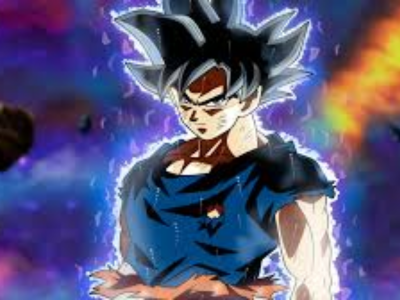

Goku
Goku é o personagem principal e herói central da franquia Dragon Ball, criada por Akira Toriyama. Ele é um Saiyajin, uma raça de guerreiros poderosos do espaço, e é conhecido por sua incrível força, coragem e determinação. Goku é amplamente reconhecido como um dos personagens mais icônicos e influentes da cultura pop japonesa e mundial. Nascido como Kakarot no planeta Vegeta, Goku foi enviado à Terra ainda bebê com a missão de conquistá-la, mas acabou sofrendo um acidente que fez com que ele perdesse a memória de sua missão original. Ele foi encontrado e criado por um idoso chamado Son Gohan, que o ensinou artes marciais e o criou com amor e bondade.